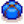

Tinta de calamar
Ir a la navegación
Ir a la búsqueda
| Tinta de calamar | |
| Los calamares la usan para evadir posibles depredadores. | |
| Información | |
| Origen | Calamar, Calamar de medianoche, Niño calamar |
| Energía | Incomible |
| Precio de venta | |
La Tinta de Calamar es un objeto que es producido por los calamares y los calamares de medianoche en el estanques de peces. También lo suelta el Niño calamar en las minas. Se utiliza como ingrediente en tinte de ropa y confección.
No se puede vender en el Gremio de aventureros y se debe enviar para completar la Colección de envío.
Regalos
| Reacciones de Aldeanos
| |
|---|---|
| Le encanta | |
| Neutral | |
Lotes
La Tinta de calamar es una de las opciones del  Lote Granja de Peces en la Alacena (mezclado).
Recetas
| Imagen | Nombre | Descripción | Ingredientes | Energía / Salud | Bonificadores | Duración | Origen receta | Precio de venta |
|---|---|---|---|---|---|---|---|---|
| Budín de espuma de mar | ¡Este budín de salmuera realmente te llevará a la mentalidad marítima! | |||||||
| Ravioli de tinta de calamar | Protege temporalmente de las desventajas. |
Sastrería
La tinta de calamar se usa en la bobina de la máquina de coser para crear la Chaqueta canina de medianoche. 
Misiones
La tinta de calamar no se usa en ninguna misión .